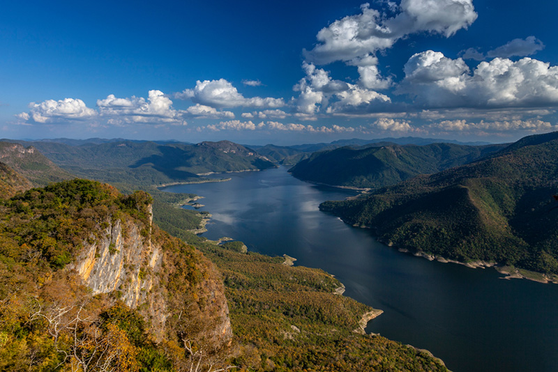

เที่ยวแม่ปิง - สายน้ำแห่งชีวิต

สัมผัสธรรมชาติและวิถีชีวิตริมฝั่งน้ำ
แม่ปิงเป็นแม่น้ำสำคัญของประเทศไทยที่ไหลผ่านภาคเหนือ มีทัศนียภาพสวยงามและเต็มไปด้วยวัฒนธรรมท้องถิ่น
สถานที่น่าสนใจ
ล่องเรือแม่น้ำปิง
ชมพระอาทิตย์ตกที่สะพานนวรัฐ
ตลาดริมปิง
อุทยานแห่งชาติแม่ปิง